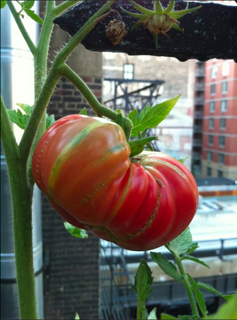
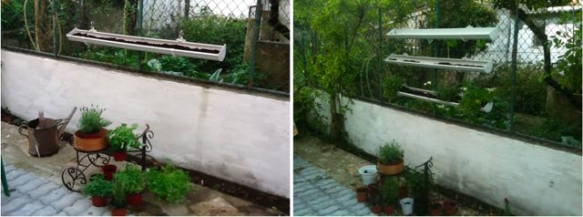
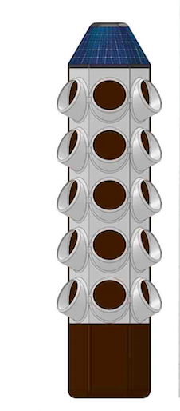
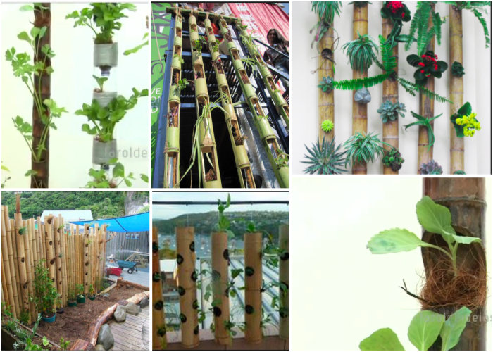
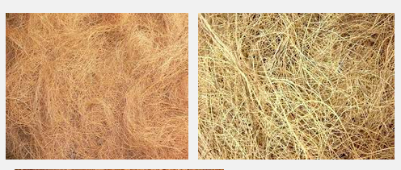
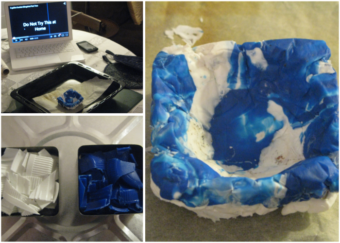
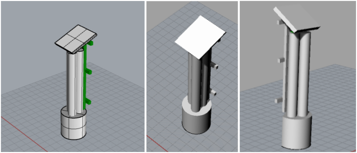

For my final project, I want to create a hydroponic herb garden for my balcony.
Six years ago, I grew my first hydroponic herbs and tomatoes on a New York firescape with great success.
Last year, I made another vertical garden, by hanging plastic gutters filled with soil on the fence of my backyard in Lisbon. This time I used soil and was again growing all sorts of herbs.
Everything was going swell until spring time arrived and temperatures started to rise. Since I was unable to water it everyday, all my herbs were dead within a month.
So this year, I decided to use Fab Academy to design a new version of a herb garden (aka, one where plants can stay alive) – this time by combining hydroponics with a vertical system made of natural/recycled materials only. I will fit it with a phd and water level sensors and use a solar pump to periodically bring the water up to the top level.
This is the model that inspired me:
And here are some bambu gardens -- which gave me the idea to make a more eco-friendly version of the original model.
The system will be an off-the-grid hydroponics tower -- where veggies and herbs can grow in a small space, without the need for electricity/water sources.
I will use three bambu tubes -- 10cm diameter, 1m20 lenght. I will make 5-6 "windows" in these tubes so the plants can gorw out. Inside, I will place a mesh of coconut fiber:
< I've tried making a small test melting and molding the HDPE in an oven, and it worked quite well, so I think I will be able to make my 2-liter water container with this material. This is the small bowl I made:
The container will then be covered by a layer of cork, which will help keep the water cool.
This is the first sketch of the system: LIST OF MATERIALS
ph sensor
sonar sensor
circuit board
red & gren LEDs
battery:
deep-cycle batteries -- the energy storage component for renewable energy systemspump
three solar panels - 14"x10" solar panel specs
water tube
3 bambu tubes 120cmx10cm
coconut fiber
2 wood planks (about 6cm wide, to make back structure)
1 wood piece (about 30cmx30cm, to hold the solar pannels)
1 cork block (to serve as cooler to the water container)
500grs plastic bottle caps (HDPE to recycle into a water container)
oven size - 33 cm x 27cm x 14 cmWtare container -- material for mold?
Wood. Don't use wood in an oven. It shouldn't be able to catch fire at normal oven temperatures, so it is not a hazard, but the heat will damage your vessel. While it will still be usable (especially if you take care to wet it beforehand), it will lose its smooth surface, and it will probably warp. Glued wood can also split along the glue lines. If you have a cheap bowl you don't mind damaging, you can use it in the oven, but I don't see why, when other materials are much better suited.
Plaster?
Can widthstand very high temperatures.
The only time you should try to speed up the drying of a mold is with a mold dryer. Rather you should put it on a rack where air can get all around it and let it dry on it's own. A little warm air may help but only a little air should be used and make sure you strap the mold together.
USEFUL RESOURCES:
GardenBot, is an entire gardening network that monitors your soil and creates charts that allow you to see the world the way your plants do.
Windowfarms, an open source community developing hydroponic edible gardens for urban windows.